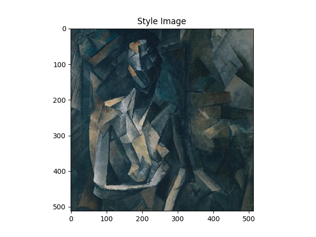
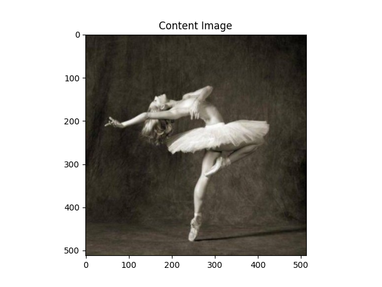

Note
Click here to download the full example code
PyTorch를 이용하여 뉴럴 변환(Neural Transfer)¶
Author: Alexis Jacq
Edited by: Winston Herring
번역: 정재민
소개¶
이번 튜토리얼은 Leon A. Gatys, Alexander S. Ecker and Matthias Bethge에 의해 개발된 뉴럴 스타일(Neural-Style) 알고리즘 을 구현하는 방법에 대하여 설명합니다. 뉴럴 스타일(Neural-Style), 또는 뉴럴 변환(Neural-Transfer)을 사용하면 이미지를 새로운 예술적 스타일로 재현할 수 있습니다. 이 알고리즘은 입력 이미지, Content 이미지, Style 이미지 3개의 이미지를 가져와서 Content 이미지의 Content와 Style 이미지의 예술적 Style을 닮도록 입력을 변환합니다.

기본 원리¶
원리는 간단합니다. Content(\(D_C\))와 Style(\(D_S\))에 대해 하나씩 두 개의 거리를 정의합니다. \(D_C\) 는 두 이미지 간의 Content의 차이를 측정하고 \(D_S\) 는 두 이미지 간의 Style의 차이를 측정합니다. 그런 다음, 입력으로 사용되는 세 번째 이미지를 가져와서 Content 이미지로 Content 거리와 Style 이미지로 Style 거리를 최소화하도록 변환합니다. 이제 필요한 패키지를 가져와서 뉴럴 변환(neural transfer)을 시작할 수 있습니다.
패키지 불러오기 및 장치 선택¶
다음은 뉴럴 변환(neural transfer)을 구현하는데 필요한 패키지 목록입니다.
torch,torch.nn,numpy(PyTorch로 신경망을 구현하기 위한 필수 패키지)torch.optim(효율적인 경사 하강법)PIL,PIL.Image,matplotlib.pyplot(이미지 불러오기 및 이미지 표시)torchvision.transforms(PIL 이미지를 텐서로 변환)torchvision.models(미리 학습된 모델 불러오기 및 학습)copy(모델을 복사; 시스템 패키지)
from __future__ import print_function
import torch
import torch.nn as nn
import torch.nn.functional as F
import torch.optim as optim
from PIL import Image
import matplotlib.pyplot as plt
import torchvision.transforms as transforms
import torchvision.models as models
import copy
다음으로, 네트워크를 실행 할 장치를 선택하고 Style 이미지와 Content 이미지를 가져와야 합니다.
큰 이미지로 뉴럴 변환(neural transfer) 알고리즘을 실행하면 시간이 오래 걸리고
GPU에서 실행할 때 훨씬 빨라집니다.
torch.cuda.is_available() 를 사용하여 GPU를 이용할 수 있는지 알 수 있습니다.
다음으로, 튜토리얼 전체에서 사용 할 torch.device 를 설정합니다.
또한 .to(device) 메소드는 텐서 또는 모듈을 원하는 장치로 이동하는데 사용됩니다.
device = torch.device("cuda" if torch.cuda.is_available() else "cpu")
이미지 불러오기¶
지금 Style, Content 이미지를 가져올 것입니다. 원본 PIL 이미지는 0과 255 사이의 값을 갖지만, 텐서로 변환될 때 0에서 1사이로 변환됩니다. 이미지도 동일한 차원을 가지도록 크기가 변환되어야 합니다. 주목해야 할 중요한 세부사항은 torch 라이브러리의 신경망은 0에서 1사이의 텐서 값으로 훈련된다는 것입니다. 만약 0에서 255값을 가지는 텐서 이미지가 네트워크에 입력되는 경우, 활성화 된 특징 맵이 Content와 Style을 감지할 수 없습니다. 그러나, Caffe 라이브러리의 미리 학습된 네트워크는 0에서 255값을 가지는 입력으로 훈련됩니다.
Note
튜토리얼을 실행하는데 필요한 이미지를 다운로드 할 수 있는 주소는 다음과 같습니다.
picasso.jpg 와
dancing.jpg.
두 이미지를 다운로드하고 현재 작업 폴더의 images 폴더에 추가하세요.
{kind=link}
{kind=link}
# 원하는 출력 이미지의 크기
imsize = 512 if torch.cuda.is_available() else 128 # 만약 GPU가 없을 경우 작은 크기를 사용
loader = transforms.Compose([
transforms.Resize(imsize), # 가져온 이미지 크기 조정
transforms.ToTensor()]) # 텐서로 변환
def image_loader(image_name):
image = Image.open(image_name)
# 네트워크의 입력 차원에 맞추기 위해 필요한 가짜 배치 차원
image = loader(image).unsqueeze(0)
return image.to(device, torch.float)
style_img = image_loader("./data/images/neural-style/picasso.jpg")
content_img = image_loader("./data/images/neural-style/dancing.jpg")
assert style_img.size() == content_img.size(), \
"we need to import style and content images of the same size"
이제 이미지를 PIL 형식으로 다시 변환하고 plt.imshow 를
사용해 이미지를 표시하는 함수를 만들겠습니다.
Content와 Style 이미지를 표시하여 올바르게 가져왔는지 확인합니다.
unloader = transforms.ToPILImage() # PIL 이미지로 다시 변환
plt.ion()
def imshow(tensor, title=None):
image = tensor.cpu().clone() # 텐서를 복제하여 변경하지 않음
image = image.squeeze(0) # 가짜 배치 차원 제거
image = unloader(image)
plt.imshow(image)
if title is not None:
plt.title(title)
plt.pause(0.001) # plots가 업데이트 되도록 잠시 멈춤
plt.figure()
imshow(style_img, title='Style Image')
plt.figure()
imshow(content_img, title='Content Image')
- 
- 
손실 함수¶
콘텐츠 손실(Content Loss)¶
Content 손실은 각 계층에 대한 Content 거리의 가중치 버전을 나타냅니다.
이 함수는 입력 \(X\) 를 처리하는 레이어 \(L\) 의 특징 맵 \(F_{XL}\) 을 가져와서
이미지 \(X\) 와 Content 이미지 \(C\) 사이의
가중 콘텐츠 거리(weighted content distance) \(w_{CL}.D_C^L(X,C)\) 를 반환합니다.
Content 거리를 계산하기 위해 Content 이미지(\(F_{CL}\))의 특징 맵을 함수에서 알고 있어야합니다.
\(F_{CL}\) 을 입력으로 사용하는 생성자를 사용해 이 함수를 torch 모듈로 구현합니다.
거리 \(\|F_{XL} - F_{CL}\|^2\) 는 두 개의 특징 맵 집합의 평균 제곱 오차이며 nn.MSELoss 를 사용하여 계산할 수 있습니다.
Content 거리를 계산하기 위해 사용되는 합성곱 계층 바로 뒤에 Content 손실 모듈을 추가합니다.
이렇게 하면 입력 이미지가 입력될 때마다 Content 손실이 원하는 레이어에서
계산되고 autograd 을 통해 모든 기울기가 계산됩니다.
이제 Content 손실 계층을 만들기 위해 Content 손실을 계산한 다음 계층의 입력을 반환하는
forward 메소드를 정의해야합니다.
계산된 손실은 모듈의 매개 변수로써 저장됩니다.
class ContentLoss(nn.Module):
def __init__(self, target,):
super(ContentLoss, self).__init__()
# 기울기를 동적으로 계산하는데 사용되는 tree로부터 타깃 Content를 `분리(detach)` 합니다.
# 이것은 변수가 아니라 명시된 값입니다.
# 그렇지 않으면 criterion의 forward 메소드에서 오류가 발생합니다.
self.target = target.detach()
def forward(self, input):
self.loss = F.mse_loss(input, self.target)
return input
Note
중요 세부 사항: 모듈의 이름은 ContentLoss 지만, 실제 PyTorch의 손실 함수는 아닙니다.
만약 Content 손실을 PyTorch의 손실 함수로 정의하려면 Pytorch의 autograd 함수를 생성하여
backward 메소드에서 수동으로 기울기를 다시 계산 및 구현 해야 합니다.
스타일 손실(Style Loss)¶
Style 손실 모듈은 Content 손실 모듈과 유사하게 구현됩니다. 네트워크에서 해당 계층의 Style 손실을 계산하는 역할을 합니다. Style 손실을 계산하기 위해서, gram 행렬 \(G_{XL}\) 를 계산해야합니다. gram 행렬은 주어진 행렬에 전치 행렬을 곱한 결과입니다. 이 어플리케이션에서 주어진 행렬은 계층 \(L\) 의 특징 맵 \(F_{XL}\) 의 재구성된 버전입니다. \(F_{XL}\) 는 \(K\)x\(N\) 행렬인 \(\hat{F}_{XL}\) 을 형성하도록 재구성되며, \(K\) 는 계층 \(L\) 의 특징 맵의 수이고 \(N\)hat{F}_{XL}` 의 첫 번째 줄은 벡터화된 특징 맵 \(F_{XL}^1\) 에 해당합니다.
마지막으로, gram 행렬은 행렬에서 각 값을 값의 총 개수로 나누어 정규화 해야 합니다. 정규화는 큰 \(N\) 차원을 가지는 \(\hat{F}_{XL}\) 행렬이 gram 행렬에서 더 큰 값을 생성한다는 사실에 대응하기 위한 것입니다.
이와 같은 더 큰 값은 첫 번째 계층(풀링 계층 전)이 경사 하강 중에 더 큰 영향을 미치게합니다.
Style 특징은 네트워크의 깊은 계층에 있는 경향이 있기에 정규화 단계가 중요합니다.
def gram_matrix(input):
a, b, c, d = input.size() # a=배치 크기(=1)
# b=특징 맵의 수
# (c,d)=특징 맵의 차원 (N=c*d)
features = input.view(a * b, c * d) # F_XL을 \hat F_XL로 크기 조정
G = torch.mm(features, features.t()) # gram product를 계산
# 각 특징 맵이 갖는 값의 수로 나누어
# gram 행렬의 값을 '정규화'
return G.div(a * b * c * d)
이제 Style 손실 모듈은 Content 손실 모듈과 거의 똑같아 보입니다. Style 거리는 \(G_{XL}\) 와 \(G_{SL}\) 사이의 평균 제곱 오차를 사용해 계산됩니다.
class StyleLoss(nn.Module):
def __init__(self, target_feature):
super(StyleLoss, self).__init__()
self.target = gram_matrix(target_feature).detach()
def forward(self, input):
G = gram_matrix(input)
self.loss = F.mse_loss(G, self.target)
return input
모델 가져오기¶
이제는 사전 훈련된 신경망을 가져와야 합니다. 논문에서 사용된 것과 같이 19 계층을 가진 VGG 네트워크를 사용할 것입니다.
PyTorch의 VGG 구현은 features (합성곱 및 풀링 계층 포함) 와
classifier (완전 연결 계층 포함) 두 가지 하위 Sequential 모듈로 구분 된 모듈입니다.
Content 및 Style 손실을 측정하기 위해서 각 합성곱 계층의 출력이 필요하기 때문에 features 모듈을 사용할 것입니다.
일부 계층은 훈련하는 중 평가와 다른 동작을 하므로, 네트워크를 .eval() 를 사용해 평가 모드로 설정해야합니다.
cnn = models.vgg19(pretrained=True).features.to(device).eval()
추가적으로, VGG 네트워크는 mean=[0.485, 0.456, 0.406] 와 std=[0.229, 0.224, 0.225]로 각 채널이 정규화 된 이미지로 훈련됩니다. 이미지를 네트워크로 입력하기 전에 정규화하는데 사용합니다.
cnn_normalization_mean = torch.tensor([0.485, 0.456, 0.406]).to(device)
cnn_normalization_std = torch.tensor([0.229, 0.224, 0.225]).to(device)
# 입력 이미지를 정규화하는 모듈을 생성하여 쉽게 nn.Sequential에 넣을 수 있습니다.
class Normalization(nn.Module):
def __init__(self, mean, std):
super(Normalization, self).__init__()
# .view 는 mean과 std을 확인해 [B x C x H x W] 형태의
# 이미지 텐서를 직접적으로 작업할 수 있도록 [C x 1 x 1] 형태로 만듭니다.
# B는 배치 크기입니다. C는 채널의 수입니다. H는 높이고 W는 너비입니다.
self.mean = torch.tensor(mean).view(-1, 1, 1)
self.std = torch.tensor(std).view(-1, 1, 1)
def forward(self, img):
# img 정규화
return (img - self.mean) / self.std
Sequential 모듈은 순서가 있는 하위 모듈의 리스트가 포함됩니다.
예를 들어, vgg19.features 은 올바른 순서로 정렬 된
시퀀스(Conv2d, ReLU, MaxPool2d, Conv2d, ReLU…)가 포함되어 있습니다.
Content 손실과 Style 손실 계층을 감지하는 합성곱 계층 바로 뒤에 추가해야합니다.
이렇게 하기 위해서는 Content 손실과 Style 손실 모듈이
올바르게 삽입된 새로운 Sequential 모듈을 만들어야 합니다.
# Style / Content 손실 계산을 원하는 계층
content_layers_default = ['conv_4']
style_layers_default = ['conv_1', 'conv_2', 'conv_3', 'conv_4', 'conv_5']
def get_style_model_and_losses(cnn, normalization_mean, normalization_std,
style_img, content_img,
content_layers=content_layers_default,
style_layers=style_layers_default):
# 모듈 정규화
normalization = Normalization(normalization_mean, normalization_std).to(device)
# Content / Style 손실이 반복적으로 접근할 수 있도록 하기 위해
content_losses = []
style_losses = []
# cnn이 nn.Sequential이라고 가정하고,
# 순차적으로 활성화되어야 하는 모듈에 새로운 nn.Sequential을 만듭니다.
model = nn.Sequential(normalization)
i = 0 # conv를 볼 때마다 증가
for layer in cnn.children():
if isinstance(layer, nn.Conv2d):
i += 1
name = 'conv_{}'.format(i)
elif isinstance(layer, nn.ReLU):
name = 'relu_{}'.format(i)
# in-place 버전은 아래에 삽입한 Content 손실과 Style 손실와 잘 어울리지 않습니다.
# 그래서 여기서는 out-of-place로 대체합니다.
layer = nn.ReLU(inplace=False)
elif isinstance(layer, nn.MaxPool2d):
name = 'pool_{}'.format(i)
elif isinstance(layer, nn.BatchNorm2d):
name = 'bn_{}'.format(i)
else:
raise RuntimeError('Unrecognized layer: {}'.format(layer.__class__.__name__))
model.add_module(name, layer)
if name in content_layers:
# Content 손실 추가
target = model(content_img).detach()
content_loss = ContentLoss(target)
model.add_module("content_loss_{}".format(i), content_loss)
content_losses.append(content_loss)
if name in style_layers:
# Style 손실 추가
target_feature = model(style_img).detach()
style_loss = StyleLoss(target_feature)
model.add_module("style_loss_{}".format(i), style_loss)
style_losses.append(style_loss)
# 이제 마지막 Content 및 Style 손실 뒤에 계층을 잘라냅니다.
for i in range(len(model) - 1, -1, -1):
if isinstance(model[i], ContentLoss) or isinstance(model[i], StyleLoss):
break
model = model[:(i + 1)]
return model, style_losses, content_losses
다음으로 입력 이미지를 선택합니다. Content 이미지 사본이나 백색 잡음을 사용할 수 있습니다.
input_img = content_img.clone()
# 만약 화이트 노이즈(white noise)을 사용하려면 아래 주석을 제거하세요
# input_img = torch.randn(content_img.data.size(), device=device)
# 그림에 원본 입력 이미지를 추가합니다.
plt.figure()
imshow(input_img, title='Input Image')
경사 하강법¶
알고리즘 작성자인 Leon Gatys가
여기 에서 제안했던 것처럼,
L-BFGS 알고리즘을 사용하여 경사 하강법을 수행합니다.
네트워크 훈련과 다르게 Content / Style 손실을 최소화하기 위해 입력 이미지를 훈련하려고 합니다.
파이토치 L-BFGS optimizer optim.LBFGS 를 만들고 최적화 할 텐서로 이미지를 전달합니다.
def get_input_optimizer(input_img):
# 입력이 기울기가 필요한 매개 변수임을 표시하는 줄
optimizer = optim.LBFGS([input_img])
return optimizer
마지막으로 뉴럴 변환(neural transfer)을 수행하는 함수를 정의해야 합니다.
네트워크의 각 반복 동안, 업데이트된 입력이 주어지고 새로운 손실을 계산합니다.
각 손실 모듈(Loss module)의 backward 메소드를 실행하여 기울기를 동적으로 계산합니다.
optimizer는 모듈을 재평가하고 손실을 반환하는 “closure” 함수가 필요합니다.
여전히 해결해야 할 마지막 제약이 있습니다. 네트워크가 이미지에 대해 0 ~ 1 텐서 범위를 초과하는 값으로 최적화하려 할 수 있습니다. 네트워크가 실행될 때마다 입력값을 0에서 1사이로 수정하여 문제를 해결할 수 있습니다.
def run_style_transfer(cnn, normalization_mean, normalization_std,
content_img, style_img, input_img, num_steps=300,
style_weight=1000000, content_weight=1):
"""Run the style transfer."""
print('Building the style transfer model..')
model, style_losses, content_losses = get_style_model_and_losses(cnn,
normalization_mean, normalization_std, style_img, content_img)
# 모델의 매개변수를 제외한 입력을 최적화해야 하므로
# 이에 맞춰서 requires_grad 값을 갱신합니다.
input_img.requires_grad_(True)
model.requires_grad_(False)
optimizer = get_input_optimizer(input_img)
print('Optimizing..')
run = [0]
while run[0] <= num_steps:
def closure():
# 업데이트 된 입력 이미지의 값을 수정
with torch.no_grad():
input_img.clamp_(0, 1)
optimizer.zero_grad()
model(input_img)
style_score = 0
content_score = 0
for sl in style_losses:
style_score += sl.loss
for cl in content_losses:
content_score += cl.loss
style_score *= style_weight
content_score *= content_weight
loss = style_score + content_score
loss.backward()
run[0] += 1
if run[0] % 50 == 0:
print("run {}:".format(run))
print('Style Loss : {:4f} Content Loss: {:4f}'.format(
style_score.item(), content_score.item()))
print()
return style_score + content_score
optimizer.step(closure)
# 마지막 수정...
with torch.no_grad():
input_img.clamp_(0, 1)
return input_img
마지막으로, 알고리즘을 실행합니다.
output = run_style_transfer(cnn, cnn_normalization_mean, cnn_normalization_std,
content_img, style_img, input_img)
plt.figure()
imshow(output, title='Output Image')
# sphinx_gallery_thumbnail_number = 4
plt.ioff()
plt.show()
Out:
Building the style transfer model..
Optimizing..
run [50]:
Style Loss : 4.062446 Content Loss: 4.084163
run [100]:
Style Loss : 1.191642 Content Loss: 3.021702
run [150]:
Style Loss : 0.717076 Content Loss: 2.653243
run [200]:
Style Loss : 0.479736 Content Loss: 2.489868
run [250]:
Style Loss : 0.346497 Content Loss: 2.403488
run [300]:
Style Loss : 0.262243 Content Loss: 2.349413
Total running time of the script: ( 0 minutes 24.100 seconds)